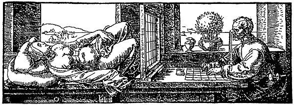
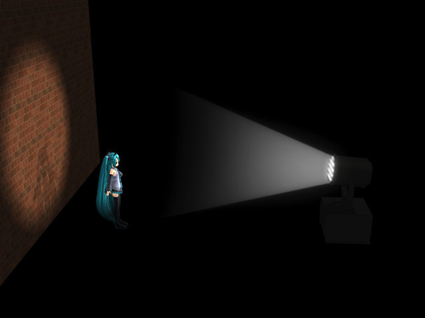
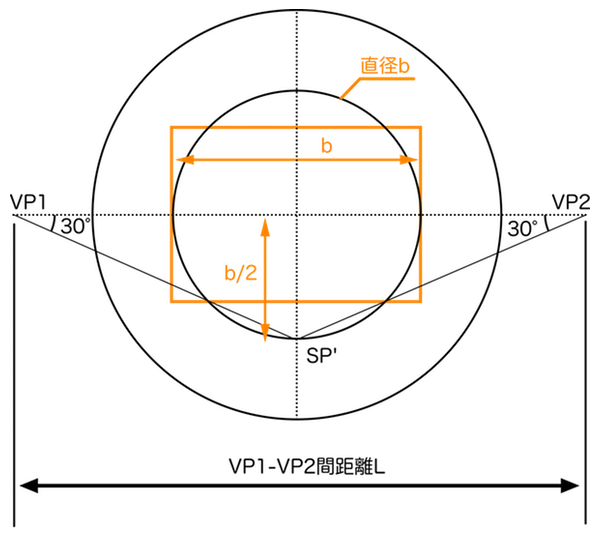
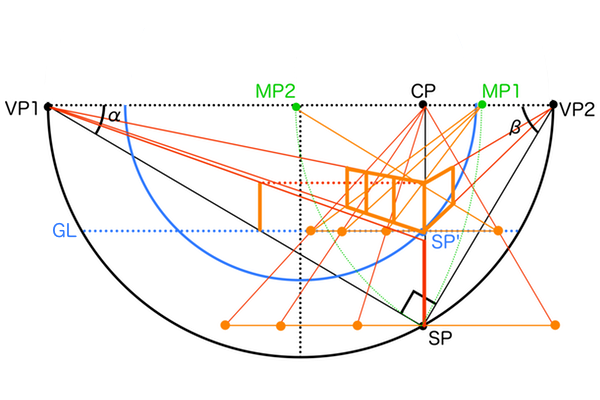

これまで透視図法について散々考察を重ねてきましたが、やっとまともな形で理論化できたような気がします。思い返せば、透視図法の知識が全くない頃に書いた建築パースを徹底研究！パース理論の基礎知識と描き方の記事では情報量だけが溢れて結局明確な結論は得られず、視円錐を使って考える望遠パース・広角パースの描き方の記事で視円錐というものを知り、一瞬で背景イラストのアングルと画角を決めるパースの描き方の記事で視円錐の底面を使えば画角を自由に設定できると確信し、よく分からずに作図していては嘘パースを描いてしまうため透視図法の知られざる大前提 〜実は市販のパース理論書の教えは間違っていた〜の記事では独自のルールを決めました。そこまでで大きな間違いはないのですが、やはり閃きだけで考察していてもまとまりがなく、いろいろな知識はあるけどそれらを連結できないことがあります。透視図法の難しいところは、連結すべき知識を間違ってもなんとなく描けてしまうため間違いに気づけないところです。その間違いに気づけないのは透視図法の全貌が掴めていないからです。
そこで、過去に得た知識を全て拾い集めて論理的に矛盾がないように並べ替えることで、知識を正しく連結し直そうと考えました。透視図法には様々な意味を持つ点や角度が多数あり、それらを分解して理解した後、再度組み立てて一つの平面図にまとめることで透視図法の全貌を完全把握した状態で作図できます。その一つの平面図のことを「透視図法解剖図」と名付けました。この記事では、魔改造された透視図法解剖図なるものを紹介し、その後で少しずつ徹底解剖しながら解説していきます。
視界＝視円錐＝カメラ＝透視図法
透視図法という手法は、人間の視界で見えているものの輪郭を透明板上にプロットするという方法で2次元に再現したものです。「視界」とは「視野」の内側の空間のことで、その視野を可視化したものを「視円錐」と呼び、これが透視図法を考える上で最も重要なイメージとなります。視円錐のイメージは、サーチライトで照らした立体の影が壁に投影されることと似ています。以前書いた視円錐を使って考える望遠パース・広角パースの描き方の記事では、まだ閃いた段階なので情報足らずですが視円錐について考察していますので参考に。

透視図法の原型（出典 文部科学省HP）

視円錐はサーチライトに似ている（出典 DONburi Room）
また、透視図法の勉強のために人間の視界を分析するときは、客観的データとしてカメラで撮影するのが最適です。カメラのフィルムは平面状で、人間の眼球の網膜は曲面状なのになぜ写真に不自然な歪みが生じないのかというと、写真に映されているのは網膜に届く前の段階の風景で、つまり写真を見ていることは風景を眺めていることと全く同じだからです。仮に網膜で歪みが生じていたとしても、その網膜に与えられる情報が同じなら写真も風景も同じように見えます。ちなみに、透視図法で描いた絵が不自然に歪むのはなぜか、という議論は透視図法の根本的な原理について触れなくてはならず、結論を言えば正しい立ち位置から見ていないから歪むというものなのですが、それ単体で非常に面白い内容なので別の機会に考えたいと思います。
 カメラの内部構造（via CAMERAfan）
カメラの内部構造（via CAMERAfan）
 フィルム投影の構造（via モノスタジオ）
フィルム投影の構造（via モノスタジオ）
視界の広さ＝視野角＝画角
動物は種によって視野の広さが異なります。肉食獣は視野の広さを獲得することよりも獲物との距離感を優先したため、2つの目が正面についています。それに対して草食獣は天敵の姿をいち早く発見するため、顔の両サイドに目をつけてほぼ180°見渡しています。猛禽類は上空から小さい獲物をロックオンするため、視野の中央付近のみ極端に拡大できる望遠鏡のような目を持っています。昆虫たちはミニチュアの世界で生きているため、軽くて素早い動きを捉えるために複眼を持っています。
このように、一言に視野といっても目的によって様々な特徴を持っていて、その違いが顕著に現れるのは「視野角」が違うためです。この「視野角」が2つの眼による視界の広さを表す指標だとすると、「画角」はカメラレンズで撮影できる範囲のことを指します。どちらもほぼ同じ意味を持つので使うときはニュアンスに気をつけるだけでいいと思います。
画角の違いによる見え方の違いは単純に見える範囲が違うというところなのですが、そういった漠然としたイメージでは具体的な映像は浮かんできません。絵を描く場合は画面構成を考えるため、画面の大きさに対して立体がどの位置でどれくらいの面積を占めているかが重要なので、どのような形状の視円錐のどの位置に立体があるかをイメージすると分かりやすいと思います。


イメージした視円錐をスライスして、断面の直径を同じ大きさに拡大縮小して重ねたものが最終的な絵となります。

平面図×側面図=投影図＝透視図法解剖図
透視図法を深く理解するためには、平面図、側面図をイメージしやすい「足線法」を理解することが近道となります。平面図は航空写真のようなものなので、空間内の立体同士の立ち位置を見やすくします。側面図は観測者の視点と地面の位置関係（高さ方向）を見やすくします。側面図では視点の高さであるアイレベルELは観測者の身長に設定され、原則として2点透視図法では地面と視線は平行なので永久に交差することはありません。しかし、投影図では奥行きの縮小によっていずれ地平線HLに収束するので、地平線HLとアイレベルELと視中心CPは一致します。

このとき地平線HLとアイレベルELが一致するとしているのは、2点透視図法において視線と地面が平行であることが前提であるため、観測者が注目している視中心CPがある高さであるアイレベルELは地平線HLと重なるはずだからです。もしHLとELが一致していない場合、それは観測者が地平線HLを見つめていないため見下ろしたり見上げたりしていることになり、よって3点透視図法ということになってしまいます。3点透視図法と2点透視図法では、画角θの設定方法やCPの位置などの扱いが違います。3点透視図法についての解説は次の3点透視図法の解剖図 〜なぜ4点ではなく3点なのか〜の記事で。

また、「シフトレンズ」という特殊なカメラレンズを使えば、視線の方向を変えずに映る風景を上下左右にズラすことができます。視線の方向を変えないということはPPと視線が直行したままということで、なおかつ風景を上下左右にズラすということはPPをスライドさせているということで、結果としてCPがPPの中央にない絵となります。言い換えれば風景の任意の部分をトリミングするような構図の取り方で、このような「シフト」という考え方は以前の一瞬で背景イラストのアングルと画角を決めるパースの描き方と2つの視円錐を重ねて三点透視パース作画 〜建築パースとリアルパースの違い〜の記事の「画面を切り取る」アイデアの実用性を補強するものとなります。ただ、透視図法において特殊なカメラレンズによって作られた「シフト」した状態は例外扱いなので、この記事ではスタンダードな1点透視図法、2点透視図法について説明します。ちなみに、3点透視図法のように見下ろしたり見上げたりしている状態ではELとCPが一致しませんが、この状態は「チルトダウン・チルトアップ」といったカメラワークがなされた状態になります。

側面図をそのまま平面図に取り込むことはできませんので、側面図で設定した高さ方向の距離情報と、平面図で設定した立ち位置情報を踏まえて、観測者がSPからPPを見ている状態すなわち投影図として作図します。この投影図上での作画フレームの位置によってアオリ・フカン構図まで決められるようになり、透視図法の全貌を一つの図で説明できるようになります。透視図法の投影図は、各点の機能さえ理解してしまえばすごくシンプルに見えてきます。透視図法の投影図と、可視化された視界としての視円錐がどのようにリンクしているかをしっかり覚えてください。透視図法について何か説明しようと図を描いた時、それは透視図法の投影図の一部を使うことが多いです。さながら透視図法の解剖図といったところです。

それでは透視図法解剖図をバラバラに分解しながら解説していきます。ここでの解説には透視図法をお絵描きで使う際に使用する技法を理解するために必要な知識が詰まっています。もし全部理解できたら今後透視図法で悩むことはほとんどなくなると思います。自信あり。
絵作りの要「画角θ」
画角とは、SPから見える範囲を決めるもので、それによって視円錐の底面PPの直径の大きさも変わってきます。このときSP-PP間距離は一定のまま画角のみを変えます。つまり観測者の立ち位置は変わらないということで、カメラマンがレンズを選択しているようなものだと考えてください。

そして視円錐の底面PPではSP、VP1、VP2が円周上にあるとき、タレスの定理によってSP角すなわち画角が90°となります。そして、画角を60°に変えると見える範囲が狭まる、つまりPPの直径が小さくなり、その円が画角60°の視円錐の底面ということになります。

ただしここで注意するのが、画角の大小によって視円錐の底面PPの直径が変化しても、最終的に絵として描かれる大きさは紙やディスプレイのサイズに従って同じ大きさに統一されるということです。さきほどまでのように、視円錐を使って画角というものを直感的なイメージで考える過程ではPP-SP間距離を一定とすることが前提でしたが、それによって描かれた絵はPP直径の方を一定とする必要があります。

それならば初めからPP直径を一定として作図すればいいのではとなりますが、そうすると今度は画角が小さいときのPP-SP間距離が長くなりすぎて、SPの位置が作図する画面のはるか外側に追いやられてしまって作図がやりにくくなります。しかし、このような事態になるのはこの時点では視円錐を平面図で捉えているからです。視円錐とは本来は視界の領域を可視化したものであって、目の前に立体的に存在しているものです。

これらの条件を一つの図に収めるためには平面図や側面図といった2次元的なイメージだけで考えていては難しいことがわかりました。それなら3次元的なイメージを取り入れるしかないということで、ここで「遠近感」を考慮し始めます。まずは物理的には「常にPP-SP間距離は一定である」という前提、そして絵として仕上げるために「最終的にPP直径を統一する」という前提、この2つの前提を踏まえて比率調整をするために「PP-SP間距離：PP-SP'間距離=PP直径：PP'直径」として画角90°のときと画角が小さいときの視円錐の大きさを近づけます。すると結果として画角が小さいときの「PP-SP'間距離は画角90°のときより短く」描かれ、それによって画角は小さくなったはずなのに「SP'角は画角90°のときより大きく」描かれ、画角90°のときと違って「SP角=画角」であったことと矛盾します。これは遠近感の影響によるもので、遠近感の影響の中身を知れば納得できます。

遠近感は円盤の回転で考えます。画角が小さくなるにつれてPP直径が小さくなるので、その直径に収まるように画角90°のPPを回転させるイメージです。このとき回転軸になるのがアイレベルELなので水平方向のPP直径は変化しませんが、回転軸と直行するPP-SP間距離は徐々に短くなっていきます。そして画角が小さいときのPPは回転して斜めになっているので、それを視線に対して直行する方向に奥行きの長さを補正すると、結果として奥行き方向が圧縮されて望遠レンズらしい絵になるということです。このように透視図法について考えるときは、そもそもが3次元を2次元に落とし込む技法なので、寸法の比率の変更や視線方向の長さの圧縮など、様々なつじつま合わせがなされていることを知っておくと何かと応用に便利かと思います。

ここまでの考え方を応用すれば、任意の画角θのときの視円錐を作図するにはVP1角とVP2角の和が画角θの大きさと等しくなることが分かり、「SP角=画角θ」であったのが「SP'角=画角θ」ではなくなることが矛盾ではないことが分かります。これらの考え方をまとめて作画のための解釈をすると「画角を小さくするときはVP1-VP2間距離Lを長くする」です。

あともう一つ注意点。任意の画角の歪みの立体を作図するときに、任意の画角のPPの円周上に立体を配置していないと別の画角の歪みで作図されます。任意の画角で作画フレームを配置できたからといって、その中に作図していれば任意の画角の歪みの立体になるというわけではなく、その場合は任意の画角以上の不自然な歪みにならないという仕組みになっています。なぜなら、立体の歪み方は視中心CPからの距離によって決まるので、作画フレーム内であってもCPからの距離が違えば任意の画角よりさらに望遠寄りの歪みになるということを覚えておいてください。この考え方は過去にも図説を載せているので参考にしてください。
 出典 お絵描きホーホー論
出典 お絵描きホーホー論
消失点の位置を決める「傾きα」
画角90°の視円錐のVP1角を変えると、観測者に対する立体の向きが変わり、それによって2点透視図法の立体の見え方が変わります。そのVP1角というのが傾きαのことで、これは任意の大きさに設定できます。VP1角の変化に従ってVP2角すなわち傾きβも変化しますが、傾きαは画角90°の状態の視円錐で設定するので、これは三角形の内角の和が180°になるという法則を使えば（180°-90°-α=β）で簡単に求まります。

ここで注意することは「立体の傾き」の直角三角形と「視界」の直角三角形を混同しないことです。視界は原則としてSPから見てPPに直行する視線を2等分線とする三角形として描かれ、CPを中心に作画フレームが配置されるもので1つしかありません。立体の傾きαとはあくまで視界にある立体が向いている方向を示すものです。つまり、傾きαを示す直角三角形は立方体ごとに存在し、場合によっては複数の傾きαが存在するため消失点も立方体の数だけ描かれることになります。この「消失点は立方体ごとに存在する」ということを失念していると、違うアングルの立方体を複数描くときに間違いを犯す可能性があるので覚えて置いてください。ちなみに、立方体の角度が変わると新たな消失点が発生するため仰俯角γ（ここでは3点透視ではなく2点透視の）にも同じことが言えます。


紙に絵を描くための基準となる「画面幅b」
一般的に画面に描かれていることは観測者が見ているものです。つまり「画面の大きさ＝視円錐の底面PP」と考えることができます。そして、消失点が画面外にある場合でも任意の画角を設定しておけば、画面幅bと画角θを使って三角関数によりVP1-VP2間距離Lを算出できます。今回の記事では語りませんが、ただいま「三角関数パース理論」なるものも考案中で、この画面幅bはその要となるものです。過去の一瞬で背景イラストのアングルと画角を決めるパースの描き方の記事で「画面を切り取るパース作画」の切り取り枠としてそれらしいものが登場していますが、これの完成形がここでの画面幅bです。一般的なパース理論の解説ではあまり画面幅などというものは使われませんが、紙に絵を描く上で実用性を備えたパース理論となるはずです。その準備としてここで説明しておきます。下図は画角60°の例です。

この画面幅bという数値は常に紙の上に存在しているものなので、定規で測ればすぐにわかります。透視図法が難しいと思われているのは消失点が画面外にあるときに正確に作図できないことが原因なので、画面内に基準となるものを作ることが実用化の突破口になるというアイデアです。
画面サイズというと横長であることが一般的ですが、視円錐の底面は円形なので縦横比は等しくなります。この相違点は無視していいのかという問題ですが、これは人間の目のしくみに適応させていると考えれば許容範囲だと思います。人間は眼球が横に並んでいるため、必然的に視野は横に広くなります。また、人間は地上で生活する種なので、垂直方向の視野より水平方向の視野の方が生存圏の状況を把握しやすいことも一因です。
そもそも「画面」という概念も単純な歴史を歩んできたわけではなく、絵、映像、舞台、ゲームなどさまざまな目的のもと最適化された形状に落ち着いています。いまだに変化し続けているものなので臨機応変に考えましょう。そのときどきによって紙のサイズが変化しても対応できるよう画面幅bは変数として考えています。どのようなサイズ、縦横比の画面でも問題なく作図できるよう視円錐を使った画角の考え方を念頭に置いておきましょう。
立方体増築作図法で役立つ「対角消失点DVP」
正方形を平面図で見るとすべての角度が90°に見えます。それをパースにのせると鋭角や鈍角になって、奥行きの長さが正確に描けなくなります。しかし、いくらパースにのっても元が正方形ということは変わりません。そして正方形の対角線は常に45°をなしているため、すべての正方形に共通する45°方向の消失点を求めておきます。対角消失て点DVPは、正方形がCP-SP間の地面に作図される限り画角90°以外のパースにのっていても共用できるので、とりあえず奥行きなどの寸法にこだわらなければ正方形を量産できるというわけです。
画角90°の視円錐のSP角を二等分して45°方向の消失点を求めます。画角が小さくなっても対角消失点DVPの位置は変わりません。

DVPは傾きαによって移動します。それぞれの傾きに応じたDVPを求めて立方体の底面を作図してください。

もう感覚で奥行きの長さを描かせない「測点MP」
正方形の奥行きであればDVPで作図できますが、直方体や複雑な立体はMPを利用します。MPの原理の説明はそれだけでおいしいネタで、すでに解明できているのですが長くなりそうなので別の記事にて解説します。ここではM点法の作図手順を説明します。
画角90°のときのVP1-SPまたはVP2-SPを半径とする円と、ELとの交点がそれぞれMP1、MP2となります。

まずSPから水平方向に立体側面の原寸の線を書きます。そして奥行き寸法を取りたい点とMPを繋ぎます。その直線とSP-VP1との交点から垂線を描けばパースに乗った立体の奥行きが作図できます。これは画角90°以外のときも同じ要領で作図できます。このときSP'（GLの位置にあるSP）の位置に描く原寸の線にも奥行きの縮小が与えられていることに注意してください。もしSPとSP'で図上で同じ長さに見える原寸の線を使ってしまうと、それは遠くにあるはずのSP'の位置で同じ大きさに見えているということ、つまりSPで描いたものより大きい立体ということになってしまいます。


パース理論革命前夜
これからしばらくは、この「透視図法解剖図」をベースにパース理論を研究していこうと思います。まぁ普通の透視図法の基本図に全ての技法の作図手順を詰め込んだだけなのですが。既に執筆を控えている「三角関数パース理論」と「底面錬成陣」という勝手に名付けた手法を駆使すれば、もはや人力3DCGといっても過言ではない位の自由なパース作画ができるはずです。まだ構想段階ですが執筆しながら完成すると思うので、楽しみです。